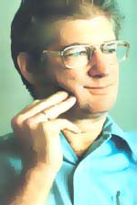

Herman E. Daly: Steady-State Economics
A Plowboy Interview with Herman E. Daly who is rapidly becoming known as one of the leaders of a movement to aim our society toward a long-term, sustainable, "steady-state" view of the earth and its needs.
By the Mother Earth News editors
January/February 1980
In our "Let the Men and Women of Wisdom Speak" feature in MOTHER NO. 59, we ran an eloquent antinuclear statement by a professor of economics named Herman E. Daly. Since that time, we've received many letters from readers who admired the well-expressed thought but ended their notes by asking, "Just who is Herman E. Daly, anyway?"
The question is a fair one, because Dr. Daly's name isn't exactly a household word . . . at least not yet. However, such "heavyweight" thinkers as Paul Ehrlich and Garrett Hardin are familiar with the Louisiana State University economist's work (Ehrlich has gone so far as to say that Daly is "among our most important theoreticians for a sustainable society").
Furthermore, the LSU professor is rapidly becoming known as one of the leaders of a movement to aim our society toward a long-term, sustainable, "steady-state" view of the earth and its needs ... a movement that has also been represented by E.F. Schumacher, Kenneth Boulding, and Amory Lovins.
You see, Professor Daly knows how to describe the fatal path of our "more is bigger is better" cultural growth syndrome with a clarity and eloquence that few people can match. Even more important, the economist has prepared a set of well-thought-out solutions to many of our runaway society's problems!
In order to find out more about this man, and about his blueprint for a steady-state future, MOTHER sent staffer Pat Stone to Baton Rouge to interview the LSU professor. The following transcript-which has been edited from over four hours of conversation-is the summary of that encounter. When you finish reading it, you'll no longer be asking, "Who's Herman E. Daly?" Instead-because this social scientist's message is so vitally significant-we think (and hope) that you'll start telling other people about Dr. Daly and his work!
PLOWBOY: Professor Daly, you've said that most economists do little more than "seek the optimal arrangement of deck chairs on the Titanic" ... in other words, that the finance specialists are so busy tinkering with the details of market operations that they don't realize the whole system is headed for disaster! Isn't that a pretty harsh criticism?
DALY: Perhaps so ... nevertheless, that statement is absolutely true! Orthodox economists believe in ever-increasing growth, but never stop to consider the implications of that belief. To them, the solution to every financial problem-including poverty, unemployment, inflation, and even pollution-is more, and more rapid, economic growth.
PLOWBOY: But wait a minute, you're a professor of economics yourself! Surely you didn't begin your career by combatting the beliefs of the leaders in your chosen field?
DALY: No, actually I started out as just another orthodox economist. As a matter of fact, my main reason for entering the field was related to promoting economic growth. You see, I grew up in Texas, where I came to know many Mexican people. I got interested in other cultures- especially the Latin culture-and decided that I wanted to help extend our American standard of living to poorer areas of the world. So I began studying economics, which seemed like a practical field for a young man with such goals . . . earned a graduate degree . . . got an assistant professorship here at Louisiana State . . . and went to work in Brazil in 1968.
PLOWBOY: You traveled to Brazil to teach economics?
DALY: Yes, I worked in that nation's northeastern state of Ceará ... an underdeveloped area which is sort of the Appalachia of Brazil. The economics students from this region always lost out in competition for American scholarships, so the Ford Foundation sent me there to help them "catch up".
PLOWBOY: While you were in Ceará, did you teach standard growth economics?
DALY: Yes, until the students at the university in Fortaleza went on strike . . . not against growth economics, but for their own national political reasons. When that happened, I suddenly had two free months . . . and decided to devote the time to a population research project in northeast Brazil. I soon learned that my study topic was hardly an academic abstraction. In that part of the world, one can almost see the population explosion in action! And-after observing hordes and hordes of hungry, uncared-for children-I was no longer impressed with the much-touted figures concerning Brazil's rising Gross National Product.
You see, according to standard economics, a prosperous growth economy should provide enough wealth for everyone to have an adequate share . . . but that certainly wasn't the case in Brazil. And one of the main reasons the poor weren't sharing in their country's increased industrial expansion was that their population was growing too rapidly. Worse yet, that growth actually benefited Brazil's upper class . . . since it provided the wealthy people with an almost unlimited supply of low-wage labor!
PLOWBOY: That must have been quite a shocking lesson for you to learn. What happened next?
DALY: When I came back from my two years in Brazil, I spent a lot of time studying the population problem. I began to realize that if there is a limit to the number of human bodies that can be supported on earth, there has to be a similar limit to the number of sustainable artifacts and commodities available ... in other words there must be a limit to economic growth.
My interest in such concepts led to my working for a year as a research associate at Yale University's Economic Growth Center. I suppose I was an “ungracious guest"-because I started writing against economic growth while I was on the Growth Center's payroll-but the experience proved to be a great learning opportunity for me. I came under the influence of physicists, ecologists, and biologists ... as well as important economists like Kenneth Boulding and Nicholas Georgescu-Roegen. Eventually, I came to realize that economics is actually a branch of biology: that is, a science that focuses on all of our "outside the skin" life processes, which are dominated by commodities of exchange.
PLOWBOY: You became a kind of ecological economist.
DALY: Well, both words do come from the same Greek root: oikos, or household. Ecology means the study of the household-which, of course, is the entire planet Earth-and economics means the management of the household. So a union of the two fields is perfectly appropriate.
PLOWBOY: What did you do with this new-found synthesis?
DALY: Shortly after I returned to LSU from Yale, I edited my first book-an anthology of essays called Toward a Steady-State Economy-which tried to expose the basic fallacy of standard "growthmania" economics and point the way to a stable, long-term, steady-state economy. That book and my major work, Steady-State Economics, have been used in courses at over 100 colleges and universities from Stanford to MIT. But, I'm sorry to say, I think the books have had more influence on environmental studies programs than on the economics departments of such schools.
And the people I'm really trying to reach are my more orthodox colleagues . . . because the ecologists already know there's a problem with our pattern of ever-increasing growth. If I could only get some of the leading economists to look at the larger picture and become seriously interested in the possibilities of a stable, steady-state economy. . . .
PLOWBOY: Why is it so important to reach economists? How much influence can they have? After all, such financial theorists seem to spend much of their time contradicting each other!
DALY: That's true, there are all sorts of debates and divisions in orthodox economic circles. Consequently, most people have learned not to pay any attention when economists argue about financial issues like taxes or interest rates . . . and rightfully so.
But most economists do agree on the basic theory that the economy is a machine that continually needs to be fueled and made bigger. Furthermore, the majority of our world's governments use this mechanistic model to tackle all of their finance-related problems. Do you have poverty and unemployment? GROW to provide jobs and welfare revenues. Do you have inflation? GROW to increase the quantities of produced goods so prices will fall. Stuck with an unfavorable international balance of payments? GROW to increase exports. Got too much pollution? GROW so you'll be rich enough to afford cleaning up and discovering new technologies. Worried about war? GROW so you can have both guns and butter.
In fact, almost all of the nations on our planet are on a perpetual expansion kick. Indeed, economic growth is the most universally accepted goal in the world! Capitalists, communists, fascists, and socialists all strive to solve their problems by maximizing growth. And that fundamental belief-the concept that growth is a panacea-came right from the world's economists.
PLOWBOY: Is this belief what you mean when you refer to growthmania?
DALY: Growthmania is more than believing in infinite growth ... it's the situation that occurs when that growth becomes so important that no one can even conceive of its ever costing more than it's worth. But we're worse off than that. We've got hypergrowthmania.
PLOWBOY: Hypergrowthmania?
DALY: Yes, we take all the costs of growth and add these to our Gross National Product as benefits! Have you ever noticed that nothing is ever subtracted from the GNP? That's because we count our expenses as income! And the logic of that path may eventually lead us to terminal hypergrowthmania.
PLOWBOY: TERMINAL hypergrowthmania?!!
DALY: Terminal hypergrowthmania-and here I hope I'm exaggerating-will come when we increase the death rate so more funeral expenses can be added to our GNP!
PLOWBOY: That sounds pretty grim.
If we burned all of the world's fossil fuels as rapidly as we could, we'd end up getting the energy equivalent of only about two weeks of sunlight.
DALY: True, but it's the logical, inevitable result of ignoring the finite nature of our environment, of assuming that the physical world should be adjusted to accommodate infinite growth . . . instead of recognizing our real biophysical limits and adjusting ourselves and our economy to function within those boundaries.
PLOWBOY: What are the basic limits that you're referring to?
DALY: You can determine them by simply asking yourself how humans live. The answer, of course, is that our lives are ultimately dependent on sunshine! There's a fixed solar flux that comes to the earth, and we "feed" on that energy. That's one basic fundamental constraint. Of course, right now we are also living off the sunshine of Paleozoic summers trapped in fossil fuels. But that's an impermanent subsidy. It's capital instead of income.
There're other restrictions-such as our mineral resources, for instance-but even more basic than those are the universal unbreakable laws of matter-energy: namely, the first and second laws of thermodynamics.
PLOWBOY: Could you give us a "refresher" explanation of those "energy rules"?
DALY: Of course. The first law states that matter and energy can be neither created nor destroyed . . . that everything has to come from somewhere and go to somewhere. Our world is both a source for inputs of matter-energy and the sink for outputs of matter-energy.
The second law deals with entropy-which, simply put, is the degree of waste or disorder in the use of energy-and says that, in a closed system, entropy always increases. That is. we are constantly converting useful low-entropy potential into high-entropy waste.
The economic importance of these two laws can be seen when one considers how they affect what I call "throughput" . . . the basic flow of matter-energy from the environment, through the human economy, and then back to the environment. The first law of thermodynamics tells us that you can't destroy matter-energy . . . you can only convert it. The second law tells us that the conversion is always from a useful form to a less useful form and-ultimately-to irrevocable waste. The fact that this basic matter-energy flow is entropic in nature shows us that it's basically a cost: The greater the throughput, the greater the cost we're paying.
And this cost-which can be seen as the expense of maintaining our bodies and artifacts-must, in a nongrowth economy, be minimized for whatever level of population and wealth we want to maintain.
PLOWBOY: But how do all these restricting physical laws apply to economics?
DALY: These laws of thermodynamics mean, among other things, that a society can't grow forever. If a culture does try to keep growing, it'll run smack dab into the matter-energy limits. Now this may seem obvious . . . but I've heard prominent economists express absurd statements like, "Man has probably always worried about his environment because he was once totally dependent on it," and "I can't conceive of a non-growing economy."
There is, however, one economic system that does recognize our biophysical limits: the steady-state economy. In a steady-state system the population of human bodies and artifacts is held at a constant level, and throughput is limited to the minimum flow necessary to maintain that level. Such an economic system can still "develop"-culture, knowledge, quality, and goodness can all continue to evolve-but it doesn't "grow".
Now what are the requirements of a steady state? First, in order to establish such a system, you have to have a renewable resource base. Fortunately, we possess that. We have renewable fisheries, forests, grasslands, crop lands, sun energy, etc. And, until 200 years ago when humankind started relying heavily on industrialization and depletable minerals, we pretty much were able to survive on those "constants".
Second-and this is a more difficult requirement to meet, we need the willingness to scale our activities to fit a limited budget. After all, renewable resources are only self-perpetuating at a particular level. If you push them beyond their long-term sustainable yield, they're not renewable anymore. So we have to impose a discipline on ourselves to guarantee that we live within our means.
PLOWBOY: That's a tall order. How do we convince people to limit personal consumption?
DALY: Well, one approach would be to just go around and say, "Come on everybody, let's consume less" . . . but you know in advance that's not going to work. Garrett Hardin pointed out this problem in his famous essay, "The Tragedy of the Commons": Nobody profits from making an individual sacrifice unless everybody else makes it, too. So people who would be willing to join a collective effort to sacrifice aren't going to risk being suckers when nobody else goes along. That's like the bumper sticker that you sometimes see on big Cadillacs . . . the one that says, "You folks keep on buying those small cars. I need the gas you save."
So-along with the potential for cooperation by the conscientious majority-you have to have some systems to coerce all people into living within their biophysical limits. Of course, you don't want these systems to be too coercive, because that would allow the government to meddle too much in everyone's life. Therefore the best regulatory systems would equitably control the total throughput, but leave the allocation of that aggregate consumption flow to free choice, market interaction, and independent decision-making.
PLOWBOY: You're suggesting that government put some external limits on consumption, but let folks have freedom within those borders?
DALY: That's right, have macro stability but micro variability.
PLOWBOY: What sort of system could make this goal possible?
DALY: I've suggested three policies that I think we ought to institute. And let me say out front that my proposals are not presented as a final, ultimate solution . . . I'm merely trying to set a starting point for the debate. I'm just an auctioneer who has to call out a price to get the bidding going.
And here are my bid openers:
First-and I think this is clear to many people-we need to have limits on population growth. Now the simplest, most straightforward way to accomplish this regulation is to give everyone an equal right to reproduce, and to set that right at a figure which corresponds to a replacement level for the population. At this point I tend to favor Kenneth Boulding's scheme that recommends the use of transferable licenses to bear children. If someone can come up with a better idea, I'm eager to hear it, but I think Boulding's plan combines the maximum possible degree of individual choice with the absolute need for total population stability over the entire global surface.
PLOWBOY: Can you explain how transferable birth licenses would work?
DALY: Basically, under such a program, each person would have the right to one child. Boulding suggested making the birth permits divisible into tenths of a unit-you'd have credits equal to one-tenth of a license-in order to make for an easier exchange. The licenses would, of course, be distributed equally, so there'd be no question of allowing some people to reproduce and not others. Everyone would be treated equally.
Then when a man and woman married, the couple would have a total of two licenses, or 2.1 ... whatever figure most accurately corresponds to the replacement fertility level. Of course, some couples will want to have three or four children, while others will want none. So folks would have the freedom to exchange licenses by either sale or gift.
PLOWBOY: There'd be an open market for birth licenses, at a set going rate per one-tenth of a unit.
DALY: That's right. Now, this idea horrifies many people. "Oh my God," they say, "you're recommending that we sell children!" Well, I'm not talking about selling children . . . I'm talking about a system that would allow people to sell a right to reproduce. Once a child is born, he or she is born and is here and has the same rights as everyone else, which certainly includes the right not to be sold.
PLOWBOY: But how would you enforce such a system?
DALY: That would be very difficult, but the problem of regulation would occur with any sort of population-limiting program. I don't think that enforcement would have to be cruel and unusual. There could, for example, be some kind of fine for having children without a license. Or maybe the parents of such "illegitimate" children would have a certain period of time to purchase licenses by doing extra service work in the community.
I don't know exactly what the proper enforcement procedure ought to be ... but I'd assume, from the beginning, that most people would voluntarily comply with the license plan. There are just not enough policemen to coerce everyone into obeying any piece of legislation, so-with any law-you have to assume that you'll get voluntary compliance from the majority. On the other hand, you must also assume that there will be a recalcitrant minority, and that if you don't deal firmly with those people, they'll undermine the total system. So there would have to be some sort of punishment.
One thing's for certain though: The sooner we initiate population control measures, the milder the punishments for disobedience can be. Currently, in Singapore, couples who have more than two children lose all sorts of economic benefits . . . because such harsh punishment measures are quite necessary on the overcrowded little island. If we wait until the whole world is as crowded as Singapore, all nations will naturally have to take equally stern measures.
Another objection to a transferable birth license program is that the rich would have an advantage because they could buy more licenses. This is undeniably true. The rich can buy more of all the world's goods than can the poor. That's the whole idea of being rich! So whatever injustice there might be in this plan stems from the prior existence of rich and poor . . . not from a license system which, by itself, would tend to be equalizing in the distribution of income.
PLOWBOY: But-because the program would be introduced into an unjust system-poor people who need the money would feel forced to sell.
DALY: Suppose that happens. Then families with little money will have fewer children and rich people will have more. From the point of view of the child, life will be better.
PLOWBOY: That's still unfair to poor parents.
DALY: But such unfairness stems from the fact that poor people are poor. The way to help them is to help them not be impoverished anymore! That's where my second suggested policy comes in: the idea of a minimum and maximum limit to wealth and income.
In effect, such a system would allow the market to freely distribute income . . . but only within limits. And in setting the boundaries, we'd have to avoid two opposite mistakes: the error of having completely unlimited inequality-poverty and extreme wealth somewhat like what we have now-and the injustice of imposing a flat kind of equality that would keep everyone at exactly the same level of income no matter what.
I think either extreme is dangerous. Instead, I suggest we set up a system with a limited range of inequality. After all, people who tackle jobs that are more difficult or unpleasant than other jobs deserve higher financial rewards and incentives for their work.
Actually, a guaranteed minimum income has a good deal of political support from conservatives and liberals alike . . . because it would allow us to ease away from many of our very detailed, meddlesome welfare programs and distributive devices. The concept of a maximum income, though, is different. People don't like to talk about that. In fact, the upper limit idea is most unpopular with the poor!
PLOWBOY: Why is the idea of a ceiling on riches controversial to anyone except the very wealthy?
DALY: Partly because almost everyone hopes that he or she will eventually strike it rich. More than that, though, people don't see the need for a ceiling. If you believe-even unconsciously-that there're no limits to the total amount of resources and money, then there's no need for an upper income limit. But if there are limits to the total wealth, and if you enforce a minimum income, you're also implicitly establishing the need for a maximum income.
PLOWBOY: And what range would you envision between the upper and lower income levels?
DALY: Plato said that, in his ideal republic, the richest citizen would be four times as wealthy as the poorest. However, I'd think that a factor of 10 would be more adequate to reward all the real differences in work and incentive.
PLOWBOY: What might be a minimum income today?
DALY: I don't know, say something on the order of seven or eight thousand dollars a year . . . with the maximum set at ten times that. All income beyond seventy or eighty thousand dollars a year would then get taxed away at 100%. Of course, most people would not continue earning extra money when they would have to pay it all to the government. So such men and women would ease off from what they were doing, devote their remaining time to leisure activities, and-in the process-open up job opportunities for others. In that way, a maximum Income would help equalize the opportunities for rewarding work and help distribute the wealth.
PLOWBOY: What is the third stage of your system to establish a steady-state economy?
DALY: The third step would be to put a direct limit on our resource throughput. We would recognize our biophysical constraints-our planetary "budget"-and institutionalize the limits established by that world budget by setting up a financial counterpart to it. I suggest we do so by placing depletion quotas on basic resources. The government would auction rights for the aggregate amount of each material that could be taken from the environment In any one year.
Once again, this program keeps macro control but allows for micro variability and freedom. The government wouldn't own-or even set the sale price for- the mineral, fuel, or whatever. It would simply own, and profit from, the auction rights. Once a person bid for and bought a quota permit, he or she would then deal only with the mining or lumber company that he or she hired to harvest the raw materials. The quota right would simply be a ticket to enter the resource marketplace.
Such a policy would do several things: First, it would put a definite limit on energy and matter throughput. And, because the waste produced at the back of the system is determined by the raw materials going in the front, quotas would also lower aggregate pollution. Obviously, they'd raise a lot of money for the government, too . . . money for funding the minimum income plan or lowering payroll taxes.
In addition, the quota program would effectively raise the price of resources. Manufacturers would have to pay for the quota right as well as for the basic material and, naturally, they'd pass the cost increases on to their customers. It is to be hoped, of course, that the higher prices would force us to be more efficient in our use of resources.
This is the part of the quota plan that causes the environmental movement to clash with the consumer movement. You see, most consumer leaders want to lower all prices, but that's definitely unwise. If you have lower prices for both abundant and scarce resources, you're just going to use them all more lavishly. Higher prices on scarcer raw materials, on the other hand, would serve to discipline us to be more efficient in the use of those resources . . . and force our technology to economize on expensive materials by using them less or recycling them more.
PLOWBOY: What about the poor? Higher prices will hurt them most.
DALY: Once again the problem is not with the prices but with the fact that people are poor. Don't try to help impoverished people by lowering resource prices. That would actually subsidize the rich-who are the greatest consumers-more than the poor! The way to help the destitute is through a minimum income plan. Give them money, but require them-and the rich as well-to make their spending choices in such a way as to minimize the inefficient use of basic resources.
PLOWBOY: It sounds as if none of your three plans could work alone.
DALY: That's right, the systems fit together. In fact, there's a basic economic principle that says when you have two independent policy goals, you need two independent instruments in order to achieve both aims. For example, people could debate forever about whether to raise or lower the price of energy. The people who favor efficiency would say raise it... those who favor equity would say lower it. But the two goals will never meet. You must serve efficiency by raising the price of energy . . . and then serve equity by redistributing income resulting from the increased price.
PLOWBOY: What about enforcing a pollution tax instead of a depletion quota? That would cause resource prices to rise, as well.
DALY: True, but you have to remember that the environment doesn't care about prices, it cares about quantity . . . and pollution taxes wouldn't necessarily limit the amount of resources consumed. Such taxation would also operate at the end of the throughput process. Entropy is higher at a system's output than at the input end, so-inevitably-we'd always have many more smokestacks and drain pipes than mines and wells.
Besides all that, trying to influence the marketplace with a pollution tax is a little like letting a two-year-old child loose in a living room full of irreplaceable antiques, and then slapping the tot's hands every time he or she breaks an invaluable vase or lamp . . . instead of simply building the largest possible playpen in the room, and leaving the youngster free to play within the limits set by the enclosure.
When left to itself, the market system does not make long-term value decisions. The costs of such choices are usually either delayed or not obvious ... or they don't fall mainly on the decision-maker. Instead, the market operates-and very effectively, in its own way-on the basis of short-run competition.
Take the difference between solar energy and fossil fuels: It's estimated that the sun will shine for about another four billion years. On the other hand, if we burned all the world's fossil fuels as rapidly as we could, we'd get the energy equivalent of only about two weeks of sunlight. That's two weeks versus four billion years! Yet we currently allow the price of our scarce, short-term oil resources to determine the extent to which we introduce solar energy. If solar energy can't compete with fossil fuel that's made inexpensive by rapid extraction, then we say solar energy is uneconomical to use.
That's backwards! We ought to recognize the sun's power-our "permanent" resource-as the standard, figure out how much it costs to produce a Btu of usable energy by solar means, and let that cost determine the price and corresponding rate of depletion of fossil fuels.
PLOWBOY: So the power provided by the sun would be the energy base for a steady-state economy?
DALY: That's right. Solar energy is a long-lasting, continuous resource . . . and it's environmentally benign. Plus, since we are unable to use tomorrow's solar power today-we don't know how to "mine" the sun-such energy automatically accounts for the needs of future generations.
Of course, we still have some problems-because solar power arrives in very dilute forms-with concentrating enough sunlight energy for high intensity uses. But in the long run, solar power has to be the main energy source for an ongoing steady-state economy.
And that brings up one of the crucial reasons why the steady-state-versus-continued-growth debate is important: After we run out of fossil fuels, we'll have to base our economy either on some form of solar energy or on some kind of nuclear-based energy.
PLOWBOY: Then the growth economy is tied to atomic power?
DALY: Absolutely. You can't speed up sunlight, so solar power effectively slows the economy down by imposing an ecological discipline upon it. But nuclear power holds out the promise of more concentrated, larger amounts of energy to fuel more of the growthmania that we already have. Now the promise of abundant, low-cost atomic power has proven to be false. The nuclear industry is not going to be able to deliver scads of inexpensive energy. But since the promise has been made, people still find the atomic alternative appealing.
PLOWBOY: Inexpensive atomic power is a false promise?
DALY: Yes, because the hidden costs of nuclear energy are extremely high. Just building the necessary power plants would require the lions share of available investment funds, leaving other sectors starved for capital.
Of course, nuclear power also presents waste-storage problems, radiation risks, the possibility of meltdowns, cleanup and shutdown costs ... all of which are strong arguments against relying on atomic energy. But I think the most telling arguments against "nukes" are social: The kind of precautions necessary to make nuclear energy safe from terrorism or plutonium theft are very, very difficult to enforce. In order to do so, the whole nuclear fuel cycle would have to become a quasi-military operation and would infringe greatly on the civil liberties of many people.
PLOWBOY: How do the concepts of a steady-state economy apply to the international situation today. Specifically, how does such a system affect the roles of the developed and underdeveloped countries?
DALY: Clearly the developed nations-especially the U.S.-have to take the lead here. Let me illustrate the point with an interesting thought experiment I use here at LSU. Sometimes I ask my college classes, "What would the U.S. be like if we used one-half the amount of energy per capita that we use now?'' The students usually decide that life on such a budget would have to be vastly different. There'd be a revolution, they say . . . we'd have complete and total change.
But then I tell the students that back in the early 1960's we were using one-half the energy per capita that we're using now, and I ask how different life was in the early 60's. Well, I get a lot of blank stares-most of my students can't remember 1960-so I explain that people did have automobiles "way back then", they had TV's, and life wasn't really all that different from the way it is today . . . yet we were only using half as much energy as we do now! The U.S. today has only 6% of the world's population, but we use 30% of the world's energy!
PLOWBOY: So developed countries like the U.S. should be the first to adopt a steady-state economy?
DALY: For certain. We have to move from our present luxurious energy life-style toward a level of consumption that's lower, yet still sufficient for a good life. That line between sufficiency and extravagance is, of course, very hard to define. At this point, however, exactly where we draw that line is less important than is the basic acknowledgment that a line must be drawn.
PLOWBOY: What about the underdeveloped countries? Isn't it hypocritical for America to tell such nations, "Don't grow. Don't try to be like us?"
DALY: Of course. It doesn't make sense for us to urge a steady-state economy-at least at current economic levels-on countries like Honduras or Guatemala . . . because such lands are still impoverished.
However, it does make sense to urge limits to population for those countries. In other words, developed nations must limit both birth rate and per capita consumption, while underdeveloped countries should control only their populations: The per capita consumption of the poorer lands is going to have to grow for a while before it can be fairly stabilized.
PLOWBOY: Professor Daly, you've presented a very sensible case for the steady-state economy and how it could work. But, to be honest, it's hard to believe that most people would ever try such a system! After all, you're saying that poor countries would have to be willing to limit population, rich countries would have to do without some luxuries . . . and everyone would have to acknowledge a limit to economic growth, and work together to leave some of our planet's resources for future generations. All in all, your plan sounds pretty idealistic!
In the past, it was just plain easier to have a lot of freedom than it's going to be in the future with either a steady-state or a forced-growth economy.
DALY: You're right to point out such difficulties. And I, for one, would certainly not want to run for president on a steady-state platform ... it would be a sure recipe for defeat. People are simply not yet ready to accept a steady-state economy.
But the fact remains that men and women need to be taught if they're to change. There was a time when steady-state arguments had no effect on me, yet the logic of such systems eventually did convince me. And I'm not totally unique. My thought processes are similar to those of other rational beings.
In my own outlook, I tend to be a "hopeful pessimist". I'm hopeful because I know people can change their minds ... a lot of entrenched attitudes and opinions have changed. Take an example from the history of population control: Back in the 1920's, Margaret ganger and others were thrown in jail for sending birth control information through the mails. Today-on the other hand-abortion can be had on demand and is even publicly subsidized! Whether you consider it to be for the better or not, that's an enormous change of attitude in just 50 years. So I believe people can, indeed, be convinced to move toward the steady-state economy.
Looking at the short run, though, I can't help being pessimistic . . . because I don't think our economic growth patterns are going to change quickly. The steady-state movement is going to be glacial: irresistible in the long run but very, very slow.
So the danger is that the change will be too long in coming. There's no guarantee that the amount of time necessary for such a social conversion is available to us. We may run into really grave problems in the next 20 years.
PLOWBOY: When will our situation start to deteriorate?
DALY: Right now . . . and I think it'll continue to get worse for at least the next five or ten years.
PLOWBOY: What's going to happen?
DALY: We'll have more of the type of problems you're seeing in the newspapers today: failures of advanced technology, inflation, continuing scarcity of energy, patchwork solutions that don't consider the underlying economic faults. It will take a really fundamental crisis to get people's attention on the problem . . . some 2 X 4 that clobbers them over the head. Then maybe people will start listening to all the rational arguments in favor of a steady-state system.
PLOWBOY: What will that fundamental crisis, that 2 X 4, be? Do you think it will be a depression?
DALY: A crash? That could certainly happen. There're lots of ways a depression could come about. Let's just look at one:
Suppose something-say, an enormous war in the Middle East-completely knocks out all our Arab oil supplies. A financial panic could ensue. Industries which depend heavily on energy imports would break down. Disruptions in our food distribution system would stop the interstate food shipments from California. Before long, many people-particularly urbanites-might be reduced to a precarious or subsistence livelihood.
PLOWBOY: That's a bleak scenario. Do you really think that we'll have a severe depression?
DALY: I'd say there's something like a 20% probability that a financial crash will occur in the next 10 years. That's an extremely vague estimate, of course, but I would think that anyone who discounts the possibility of a depression to zero isn't being smart. On the other hand, someone who thinks a depression's a near certainty is probably not being too smart, either . . . but, by golly, we sure ought to recognize that such an occurrence is a realistic 20% possibility.
PLOWBOY: What other forms could the fundamental crisis take?
DALY: Well, we were nearly "2 X 4’ d” by the accident at Harrisburg's Three Mile Island. A full meltdown would have had quite a shock effect-to say the least-and would have undercut a whole lot of the influence that "happy technologists" have in furthering growth. On the other hand, perhaps a single major metropolitan area might have a severe local breakdown. Big cities are especially vulnerable to crises because of their large populations and interdependent systems.
No matter what, though, we're sure to see accelerated inflation. We're in for a long, sustained inflationary period ... as one result of trying to live beyond our biophysical budget.
PLOWBOY: The future under our growth economy certainly doesn't sound good. But some folks might look at all the restrictions inherent in a steady-state economy and think that system doesn't sound too good, either.
The shortest and straightest route to a strict totalitarian dictatorship is our push toward a nuclear-powered 'plutonium economy'.
DALY: The steady-state society will require some reduction in freedom, compared to what we have known in the recent past, but you have to look elsewhere to make a relevant comparison. The future steady state should be compared with the future growth economy. In the past-during the era of industrial boom and the open frontier-it was just plain easier to have a lot of freedom than it's going to be in the future whether we have either a steady-state or a forced-growth economy.
But the possibilities for retaining as much individual freedom as possible are a lot better in the steady-state system than in an economy where big government would have to keep trying to force growth in the face of encroaching natural limits.
An overpopulated and overconsuming community that is pressing the carrying capacity of its global ecosystems would -for its own survival-have to come under the authority of a controlling power. And the less of that control its citizens could find within themselves, the more the regulation would have to come from without. That need for external restraints could lead us directly to a strict totalitarian state . . . and-without a doubt-the shortest and straightest route to such a dictatorship is our present push toward a nuclear-powered "plutonium economy".
PLOWBOY: What would life in a steady-state system be like?
DALY: Well, life on such a budget might actually turn out to be nicer than it is now. Today, Americans are dying more from the stresses of abundance than from the diseases of scarcity. In fact-because folks often feel they have to balance their work hours with "productive" and "efficient" leisure-people even turn their hurried, crammed-in spare time into another area of stress!
In the steady state, however, leisure time wouldn't have to be so dominated by considerations of efficiency, but could be freer and more spontaneous. Life in general could be more healthful and relaxed. There'd be less pushing each other around and treading on each other's heels. The world would have room for wild animals that might otherwise be exterminated because they competed for our food supply . . . and wild flowers that would have been dug up to make room for scientific agriculture.
Oh, there'd be some tradeoffs-for example, we'd all own fewer luxuries and take fewer long-distance trips-with a steady state, but I think that our present growth economy has actually forced us to give up quite a bit, too . . . and that-if we reverse the trade-we won't be all that unhappy with the results.
PLOWBOY: And do you feel that your vision of a steady-state future is a plausible, achievable one?
DALY: Yes, I do. We need both moral growth and the proper social institutions to reach it, and admittedly the institutional changes are relatively minor compared to the revolution that would be required in values. Yet most people really do have the basic notion that humankind is the steward of creation, and that we must not behave as if our generation were the last. Most men and women would be willing to give some consideration to the future and to the continuation of life on our planet.
However, we are quickly approaching the crossroads for our decision. The choice between a nuclear-powered growth economy and a solar-powered sustainable economy is probably the major social and moral decision facing our generation. We have, thus far, treated that choice as no more than an economic dollars-and- cents decision: That treatment has obscured the issue greatly.
Our choice is not so much an economic as a moral and ethical decision . . . and one that will determine the fate of our planet.
EDITOR'S NOTE: The books Steady-State Economics (which costs $12.00 in hard cover and $6.50 in paperback) and Toward a Steady-State Economy ($15.25 hardbound and $7.95 in paper) can he ordered-postpaid at these list prices-from W.H. Freeman and Company, Dept. TMEN, 660 Market Street, San Francisco, California 94104. The related Plowboy Interview with Dr. Garrett Hardin was run in MOTHER NO. 57, page 16 . . . which is available, for $3.00 plus $l.00 shipping and handling, from THE Mother Earth News(restricted), P.O. Box 70, Hendersonville, North Carolina 28739.
|
STAFF PHOTOS |
 STAFF PHOTOS |
 |